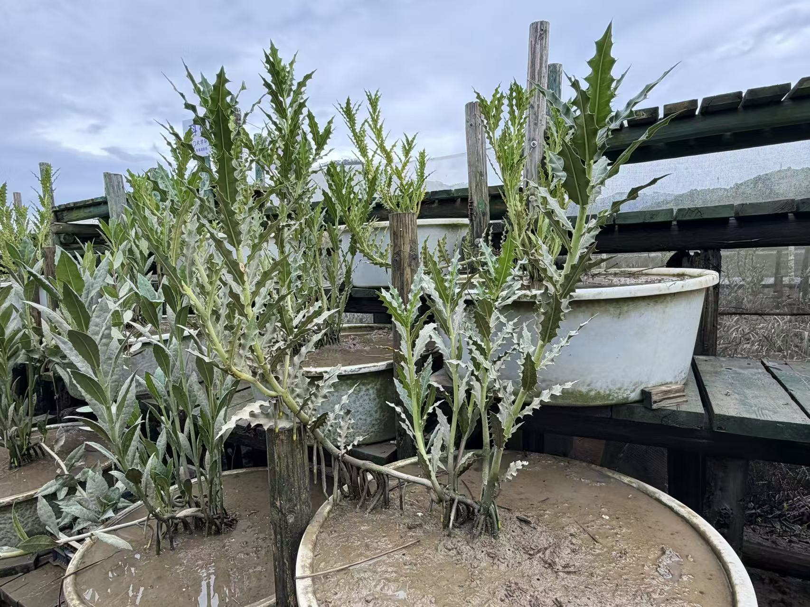
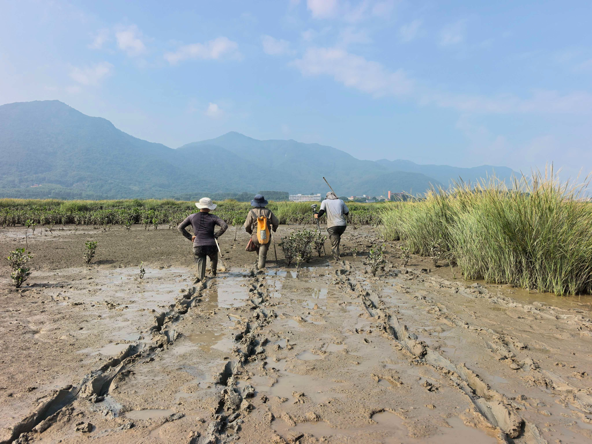

Monthly field experiment of clonal Acanthus finished in Zhangjiang Estuary
Dekai, Ruoyang, Hongtao, and Jiayu finished monthly field experiment, measuring the clonal traits of Acanthus ilicifolius along inundation and salinity gradients.
This experiment focused on clonal mangrove Acanthus ilicifolius has been lasting for nearly one year. During this period, we collected the seeds from the field, cultivated them from germination to seedling indoor, and transplanted to the in-situ field experiment.
It took two days to finish all of the field work this time. We measured several plant traits including branch length, lateral spread, number of ramets and adventitious roots monthly to monitor the clonal growth dynamic along inundation and salinity gradients.
We would like to wait and look forward to collecting good data after two-year field transplantation.

